A zero-shot, open-weight recipe for spatial reasoning on RoboSpatial-Home
Eunsu Baek, Seoul National University
public point-in-mask / yes-no accuracy · zero-shot, no training
We place 2nd on RoboSpatial-Home — zero-shot, no fine-tuning — by keeping two open-weight models fixed and eliciting the spatial skills they already have. A reasoner (Qwen3-VL-32B-Thinking) and a pointing specialist (RoboBrain2.5-8B) are tuned per task along a few inference-time knobs — a reference-frame prompt, decoding, a reasoning-trust parser, and a complementary two-model union. The right setting is task-specific: the same knob that helps one task can hurt another (greedy wins Configuration, sampling wins Compatibility). Every choice is read off what the models reveal in their own reasoning.
The benchmark
Configuration
directional yes/no
Does a directional relation hold? e.g. “Is the monitor behind the sofa?”
91.5%
Compatibility
fit yes/no
Does an object fit in a space? e.g. “Can the wok fit above the fridge?”
79.1%
Context
pointing · point-in-mask
Point at a described region (≤2 points). Correct if a point lands in the GT mask.
78.7%
Our goal
A pretrained VLM already carries much of the ability these spatial tasks demand — the real question is how to elicit it. Treating the model as fixed, we ask: what did it actually learn from pretraining, what tendencies and biases does it carry, and how do we draw out the right behavior through prompting and inference-time choices alone? This report is that exploration.
We hope the analysis and recipe are complementary — a way to elicit more from other well-trained models, and to decide where additional training would actually help.
Design space
The whole recipe is choosing a setup along these axes — and the best choice flips per task: the same knob that helps one task hurts another. So every choice is task-specific, backed by analysis.
① Model · which base model
Depending on their training data, models specialize in different spatial tasks. We pair a spatial reasoner (Qwen3-VL-Thinking) with a pointing specialist (RoboBrain-2.5).
② Reasoning · Thinking vs Instruct checkpoint
Qwen3-VL ships as two separate checkpoints — Thinking emits <think> traces and avoids defaulting to a prior. Reasoning is asymmetric: it helps the reasoner (Qwen keeps it even for pointing) but derails RoboBrain’s pointing.
③ Decoding · greedy vs sampling
How token probabilities become an answer. Greedy always takes the single most-likely token — fast and deterministic; sampling draws from the distribution, exploring alternatives and recovering minority answers greedy skips (at some variance).
④ Frame prompt · none / ego / object / world
Naming a reference frame disciplines directional reasoning — but for size/fit it can’t supply reliable size or clearance, and forcing a full frame mapping only distracts.
⑤ Parser · trust reasoning vs final token
The final yes/no token can contradict the reasoning; trusting the reasoning’s conclusion recovers stray flips.
⑥ Union · single vs two-model
For pointing, union two models whose mistakes barely overlap — a question counts if either model’s point lands inside (≤2 points total). Complementary errors → far more coverage than either model alone.
Our recipe
Micro = plain accuracy · Macro = balanced over Yes/No for VQA, mean over the 6 relations for pointing.
| Task | Approach · no training | Micro | Macro |
|---|---|---|---|
| Configuration · relational | Qwen3-VL-32B-Thinking · object-frame prompt · greedy · reasoning · parser | 91.53 | 91.9 |
| Compatibility · fit | Qwen3-VL-32B-Thinking · no-frame · sampling · reasoning · parser | 79.05 | 74.1 |
| Context · pointing | RoboBrain2.5-8B-MT (greedy, no reasoning) ⊕ Qwen (sampling, object, reasoning) → 2-point union | 78.69 | 72.3 |
| Overall | zero-shot · no training | 83.09 → 2nd 🥈 | 79.4 |
Results
| Model | Config (micro / macro) |
Compat (micro / macro) |
Context (micro / macro) |
Overall |
|---|---|---|---|---|
| Ours — Qwen3-VL-32B-Thinking ⊕ RoboBrain2.5-8B-MT · union recipe | 91.5 / 91.9 | 79.1 / 74.1 | 78.7 / 72.3 | 83.1 |
| RoboBrain2.5-8B-MT · pointing specialist, alone | 89.8 / 88.1 | 59.0 / 64.3 | 66.4 / 61.0 | 71.7 |
| Qwen3-VL-32B-Thinking · reasoner, alone | 84.8 / 86.3 | 68.6 / 59.0 | 59.8 / 55.1 | 71.1 |
| RoboRefer-8B-SFT | 84.8 / 82.0 | 30.5 / 44.8 | 61.5 / 58.7 | 58.9 |
| RoboPoint-13B | 71.2 / 65.0 | 71.4 / 54.1 | 27.9 / 26.8 | 56.8 |
| LLaVA-NeXT | 71.2 / 64.2 | 70.5 / 44.7 | 0.0 / 0.0 | 47.2 |
| Qwen2-VL | 83.0 / 79.8 | 45.7 / 49.6 | 1.6 / 1.1 | 43.4 |
| SpatialVLM | 59.3 / 51.8 | 42.9 / 47.9 | 4.1 / 4.0 | 35.4 |
| Molmo-7B | 62.7 / 67.5 | 18.1 / 50.6 | 7.4 / 5.7 | 29.4 |
| Qwen3-VL 235B-A22B Thinking · published, not run by us | — | — | — | 73.9 |
| GPT-5 · published, API | — | — | — | 52.5 |
Micro (before the “/”) = plain accuracy; macro (after) = balanced accuracy over Yes/No for Configuration & Compatibility (guards against the 83% Yes-prior), and the mean over the 6 spatial relations (left / right / front / behind / above / below) for Context. Overall = mean of the three tasks; our macro overall is 79.4. Every non-grey row is our own run through the official harness. Neither base model alone clears ~72 — the per-task tuning and the two-model union add +11.5. General VLMs collapse on pointing (LLaVA-NeXT / Qwen2-VL ≈ 0) or on Compatibility (Molmo 18). Grey rows are published reference numbers for models we did not run.
Zero-shot, open-weight. Fill baseline column with leaderboard references.
Task 1
“Is the monitor behind the sofa?” — does a directional relation hold?
Base model Qwen3-VL-32B-Thinking · reasoner
Among prompt settings (default / ego / object / world), the default judges the relation too literally → over-rejects valid cases (“on ≠ above”).
Prepend a one-line reference-frame instruction (object-centric), decode with greedy, and trust the reasoning when the final token disagrees (parser).
It reasons about the spatial relation itself (not literal word-matching) — yet can’t rigorously tell object / ego / world-centric frames apart (never trained on them).
Case 1 — Literal matching (wrong axis)
The model latches onto the most obvious relation (“it’s on the right”), then rejects because it doesn’t literally match the queried word (behind) — it never checks whether the queried relation holds.
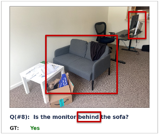
DEFAULT (no frame prompt): No ✗
So, let’s look at the image. The sofa is the gray two-seater. The monitor is on the desk to the right. Is the monitor behind the sofa? Let’s check positions. The sofa is in the middle, the desk with the monitor is to the right of the sofa. So the monitor is not behind the sofa; it’s to the side. So the answer is no.
Humans naturally interpret the scene through the queried word: asked “behind?”, a person reasons about the front–back axis and answers Yes — true under all three frames.
Case 2 — Over-strict definition (too narrow)
The model applies the queried word by its strictest definition (“above” = must be separated by gap), so “on the counter” fails the test — it rejects on a rigid technicality.
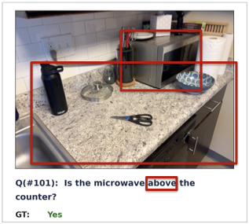
DEFAULT (no frame prompt): No ✗
So, let’s look at the image. The microwave is on the countertop, right? The counter is the granite surface, and the microwave is sitting on it. So it’s not above the counter; it’s on the counter. Therefore, the answer is no.
Humans read spatial relations flexibly. “Above” includes resting on top of, so the answer is Yes — true under all three frames.
Prompt format — [FRAME INSTRUCTION] + (blank line) + [ORIGINAL QUESTION]
Interpret all spatial directions from the CAMERA’s viewpoint — as you, the observer, see the scene. “Right of X” = to your right of object X in the image.
Interpret all spatial directions from the REFERENCE OBJECT’s own perspective — as if you stood at the object, looking outward in its natural front-facing direction. “Right of X” = to X’s own right side.
Interpret all spatial directions in the WORLD frame — consistent world-axis conventions, independent of the camera or the object’s orientation.
Naming any frame is the win (+6.8 pt over no-frame, 81.4 → 88.1); which frame barely matters (1.7 pt spread).
How adding the frame instruction to the prompt changed the reasoning
Revisiting the same two examples from the Problem — not as proof (the aggregate +6.8 pt is that), but to see how the one-line frame instruction shifts the model’s behavior: from literal label-matching to relative, perspective-based reasoning that re-verifies before committing.
“Is the monitor behind the sofa?”
Default → No ✗ — “…the monitor is not behind the sofa; it’s to the side.”
+ Object frame → Yes ✓
“…from the sofa’s perspective, what’s behind it? The sofa is facing the left (the coffee table is in front of it), so the back of the sofa is towards the desk… the desk is behind the sofa. So the monitor is behind it. The answer is yes.”
“Is the microwave above the counter?”
Default → No ✗ — “…it’s not above the counter; it’s on the counter.”
+ Object frame → Yes ✓
“…from the microwave’s perspective, the microwave is on top of the counter, meaning the counter is below it. So if the microwave is on the counter, then yes, it’s above the counter. The answer is yes.”
A second, independent failure — the final answer disagrees with the model’s own reasoning
Independent of the frame: the model reasons its way to “Yes,” then emits “No” as the final token. Fix: when the final token disagrees with the reasoning, trust the reasoning.
The model reasons to a conclusion, then the final Yes/No token contradicts it.
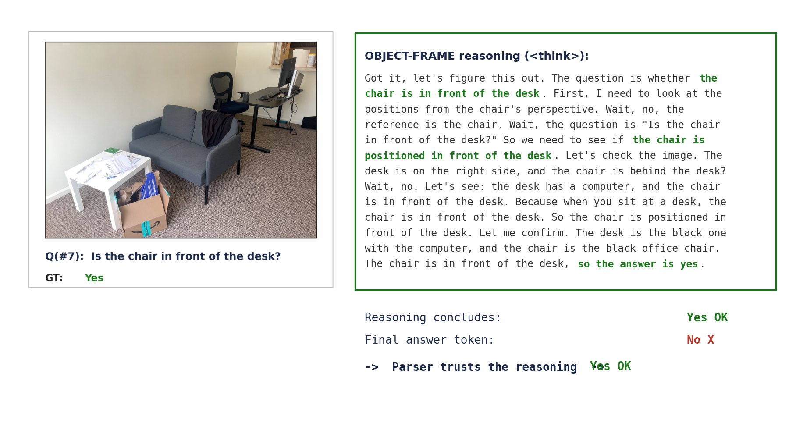
Rare & strictly one-sided: Config 4/123 disagreements, reasoning right 4/4; Compat 3/105, right 3/3. The stray token only over-rejects — never adds a wrong “Yes.”
When they disagree, take the reasoning’s conclusion.
final = yes/no token after </think>
conc = last yes/no inside reasoning
if final != conc:
answer = conc # trust reasoning
else:
answer = final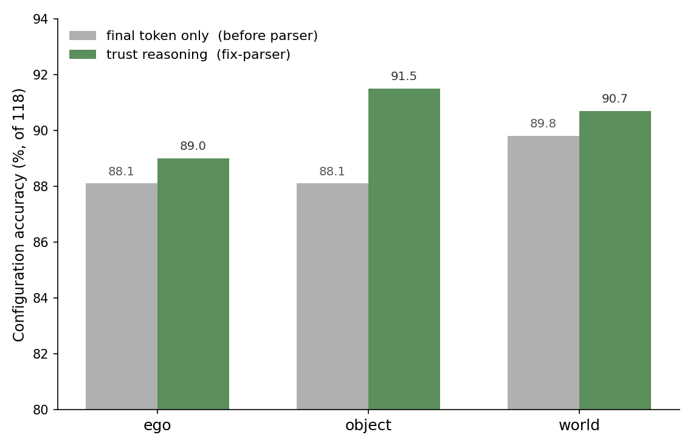
Lifts every frame; object 88.1 → 91.5 (submitted).
Decoding: greedy — the mirror image of Compatibility
Sampling helps Compatibility (recovers “No”) but hurts Configuration — it re-opens the over-rejection the frame just fixed, so we commit with greedy.
| Decoding | Micro | Yes-rec | No-rec | Macro |
|---|---|---|---|---|
| greedy ✓ | 91.5 | 90.3 | 93.5 | 91.9 |
| sampling | 79.7 | 75.0 | 87.0 | 81.0 |
Sampling drops Yes-recall 90.3 → 75.0 — over-rejection returns → Micro −11.9, Macro −10.9. (official harness, n=118)
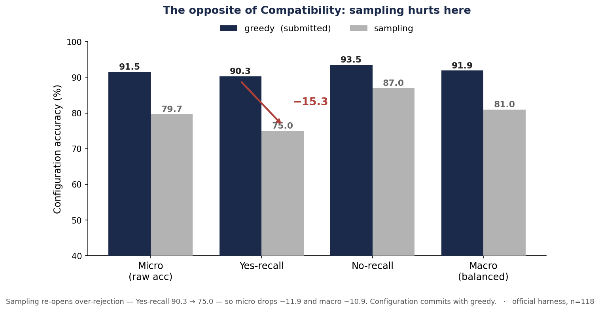
Naming a frame changes the reasoning — but it isn’t perspective-taking
The frame helps by inducing more careful, relative reasoning — not by actually adopting the frame’s viewpoint.
Naming a frame makes the model reason ~2.5× longer on its own (median 252 → 640 chars, same 768-token budget). Here is what that extra reasoning contains — and which parts actually helped.
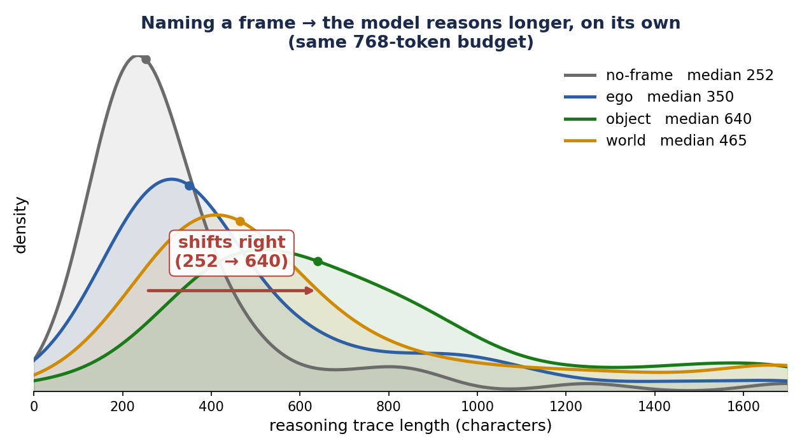
① It reasons longer — same token budget, but the object frame pushes reasoning length up ~2.5× (252 → 640 chars).
② Each frame surfaces its own vocabulary — ego → “camera / viewpoint”, object → “reference / relative”, world → “axis / world”. The model echoes whichever frame it’s given, plus a shared planning idiom (“Got it, let’s figure this out”).
How the score is computed. From every reasoning trace we count each uni/bi-gram’s rate per 1,000 words (so a long or repetitive trace can’t dominate), average that rate across questions (keeping terms seen in ≥6 questions), then plot the log-ratio of the frame’s rate vs no-frame. Higher = the frame says it more.
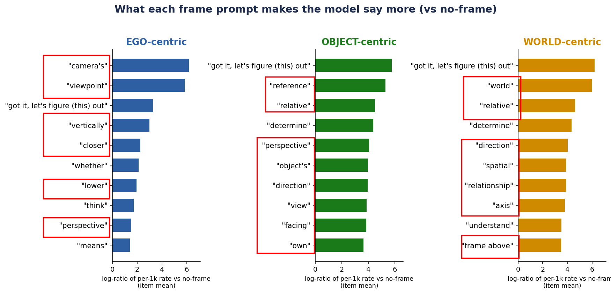
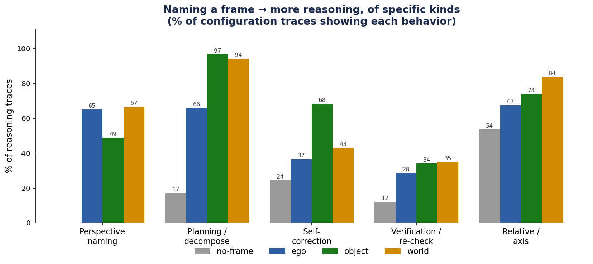
③ Grouped into 5 behavior types — a frame sharply raises Planning / decomposition (17 → 95%), with more self-correction, verification, and relative-axis reasoning.
Which of these helped? The gain is specifically fewer over-rejections (false-“No” 25 → 12), with no new false “Yes” — the extra reasoning rescues cases it used to wrongly reject. (see tab 3 →)
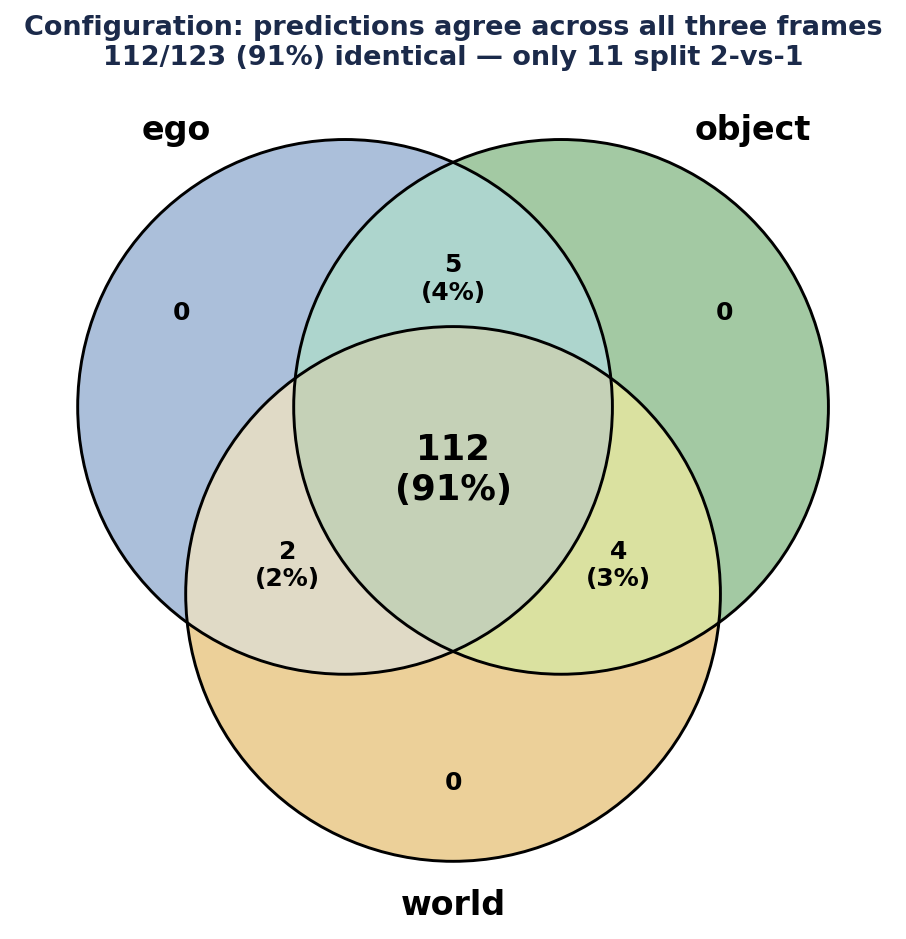
Not real perspective-taking.
Ego / object / world frames agree on 91% (112/123) of answers — the specific frame barely changes the prediction (1.7 pt).
Why? (1) 48% of questions use frame-independent relations — above / below (vertical / gravity) give the same answer in any frame; only the other 52% (left/right, front/behind) flip with viewpoint.
(2) The model was never trained on explicit frame instructions, so it doesn’t actually adopt the object’s viewpoint — it reasons more, but not from the frame.
→ The frame’s real effect is disciplining the reasoning (stop literal-matching), not perspective-taking.
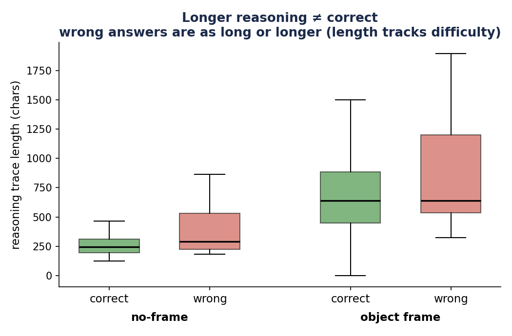
Longer ≠ better.
Wrong answers are as long or longer than correct ones — reasoning length tracks difficulty, not correctness.
So what really improved?
The gain is one-sided: +13 over-rejections fixed on the “Yes” side (false-“No” 25 → 12), with no change on the “No” side — no new false “Yes”. The extra reasoning only rescues cases it used to wrongly reject.
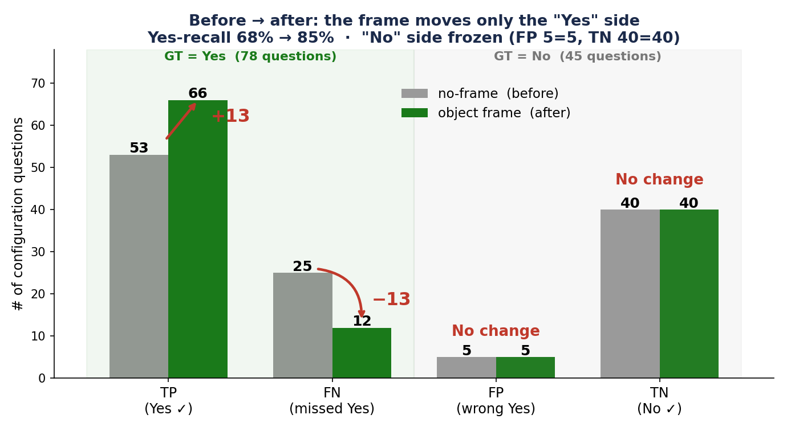
Final result — the two fixes stack to 91.5%
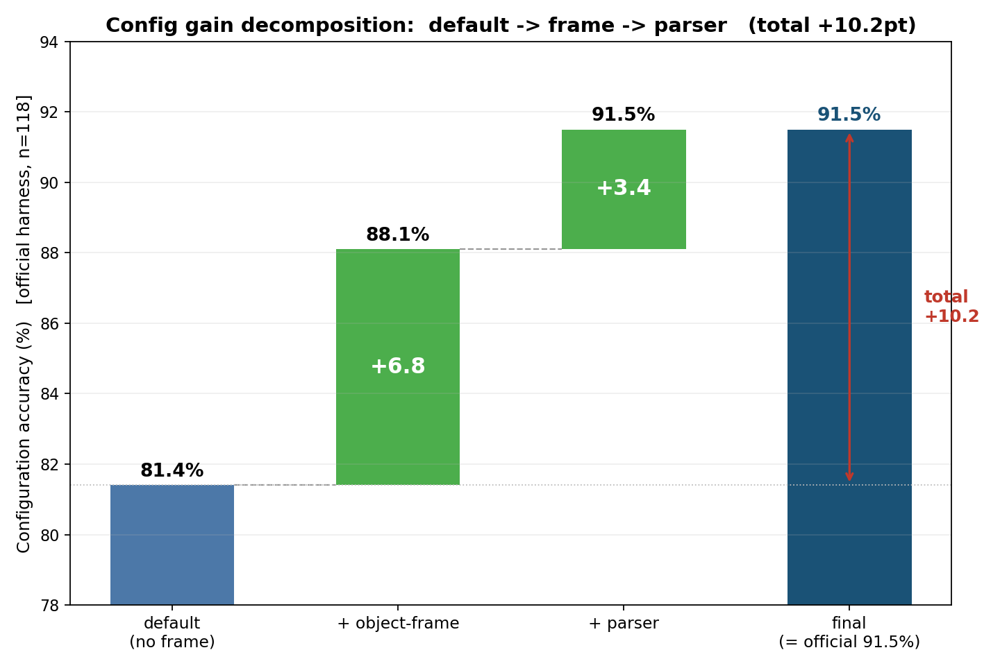
81.4% default → +6.8 object frame → +3.4 parser → 91.5%.
+10.2 pt total (81.4 → 91.5).
Most of it comes from the frame (+6.8); the parser safely adds the rest (+3.4).
Balanced under class imbalance — not a Yes-prior
Configuration GT is 61% Yes, so a Yes-bias could inflate raw accuracy. It doesn’t: No-recall 93.5% is even higher than Yes-recall 90.3%, so the Yes/No balanced macro is 91.9% — matching raw 91.5%.
The whole gain is Yes-recall (73.6 → 90.3); No-recall never moves off 93.5. The frame fixes over-rejection — the opposite of a Yes-prior.
A blind-“Yes” baseline gets 61% raw but only 50% balanced. That gap is the real spatial skill.
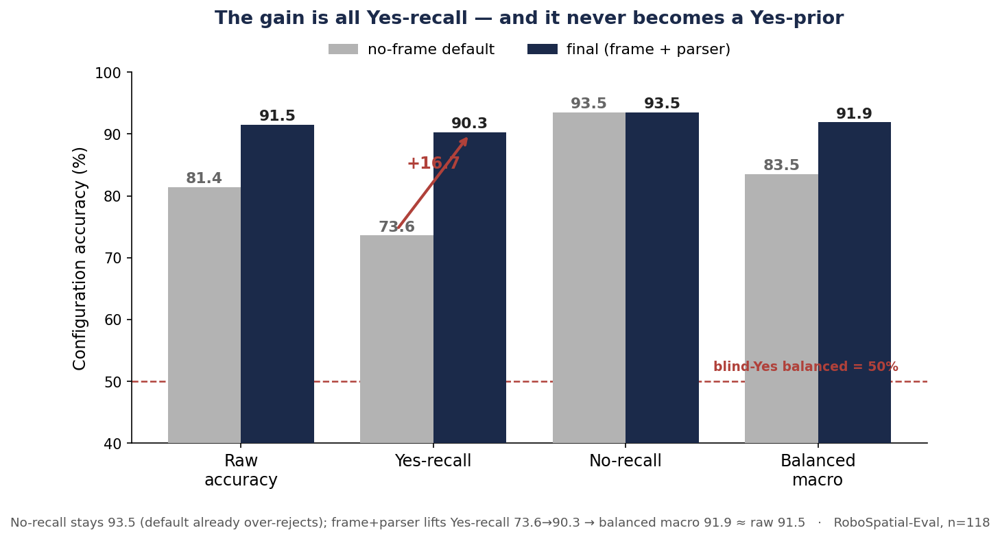
Task 2
“Does the object fit in that space?” — a Yes-heavy split (83%) where raw accuracy is gameable.
Base model Qwen3-VL-32B-Thinking · reasoner
Across candidates (Instruct/Thinking × greedy/sampling), the 83%-Yes split makes raw gameable — a blind “Yes” scores 82.9% raw but 50 balanced; models lean on a prior.
Optimize balanced accuracy: a reasoning model, no-frame, sampling decoding (recovers “No”), plus a reasoning-trust parser.
Sampling grounds the answer in real size / clearance instead of a fluent “it fits” — balanced skill rises 66 → 74.
Choosing the model — 105 questions, where raw is gamed by the 83% Yes-prior
A blind “Yes” tops Micro (82.9) yet catches zero “No” (Macro 50 = chance). Only the reasoning model with sampling actually recovers “No”.
| Model | pred Y/N | Micro | Yes-rec | No-rec | Macro | |
|---|---|---|---|---|---|---|
| blind-Yes · guess | 105 / 0 | 82.9 | 100 | 0 | 50.0 | Yes-biased · gameable |
| Instruct · no reasoning | 30 / 75 | 41.9 | 32 | 89 | 60.5 | No-biased |
| Thinking · greedy | 78 / 27 | 77.1 | 83 | 50 | 66.4 | Misses ½ of No |
| ✓ Thinking · sampling · submitted | 74 / 31 | 79.0 | 82 | 67 | 74.1 | Most balanced |
Raw is gameable — blind-Yes tops Micro (82.9) yet catches zero “No” (Macro 50 = chance).
Reasoning? Instruct (no reasoning) is stuck on a strong No-prior; Thinking reasons instead of defaulting to a prior → far more balanced.
Greedy or sampling? Sampling recovers more “No” — No-recall 50 → 67, balanced 66 → 74.
Sampling grounds the answer in the scene — greedy just asserts a fluent conclusion
It checks occupancy and size — fixing both directions. No-recall 50 → 67, balanced 66.4 → 74.1 (raw 77.1 → 79.0).
“Can the headphone fit right of the keyboard?” · GT No
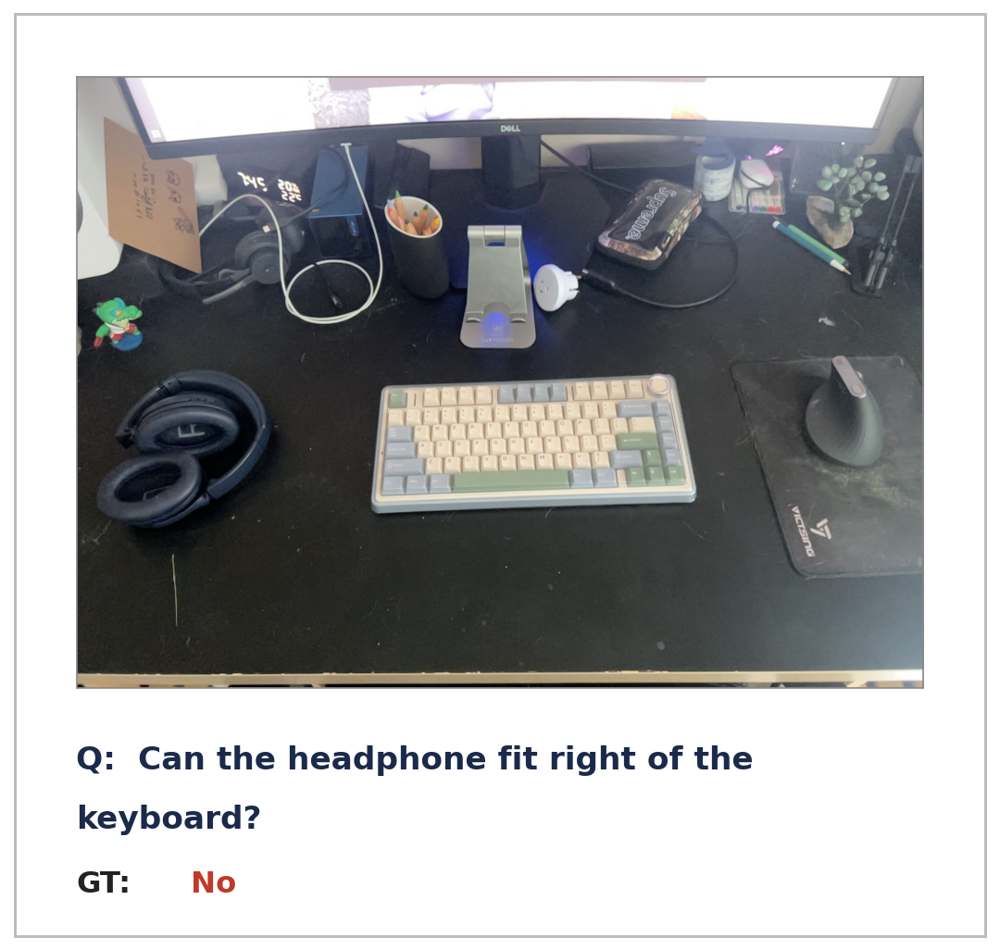
Greedy → Yes ✗ — “If we move the mouse pad, the headphones can fit.”
Sampling → No ✓ — “The mouse pad is already there, taking that space, so they can’t fit.”
“Can the wok fit above the fridge?” · GT Yes
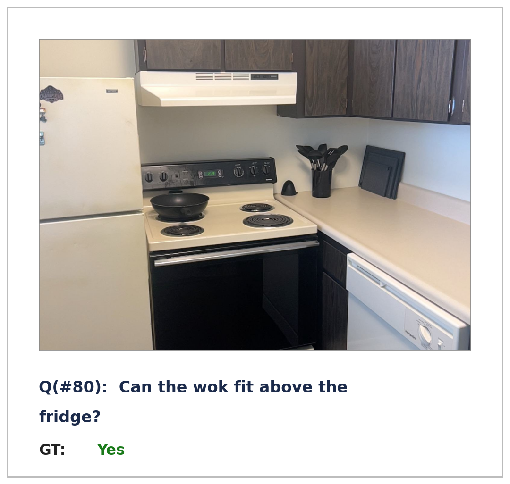
Greedy → No ✗ — “The wok is probably too big … can’t fit.”
Sampling → Yes ✓ — “The wok is about the size of one burner; the fridge top is wider than it, so it can fit.”
Parser — trust the reasoning when the final token disagrees
The same reasoning-trust parser as Configuration: when the final Yes/No token contradicts the reasoning’s conclusion, take the reasoning.
if final != conc:
answer = conc # trust reasoning
else:
answer = finalCompatibility: 3 / 105 disagreements, reasoning right 3 / 3 → +2.9 raw (76.2 → 79.0). One-sided — it never adds a wrong “Yes”.
Frame: none — the frame prompt that wins Config hurts Compat
Here we use no frame. The same one-line reference-frame instruction that gains +10.6 on Configuration loses up to −26 on Compatibility.
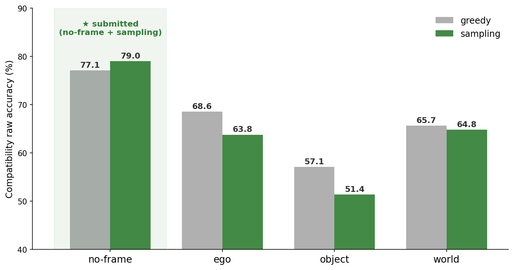
No-frame is best (79.0). Every frame prompt drags accuracy down — object-centric falls to 51.4 (−27.6).
Why it flips: Configuration asks which direction (needs a frame); Compatibility asks does it fit — size and free space barely depend on viewpoint, so a frame only drags the reasoning into perspective-taking it doesn’t need.
→ Fixes are per-task, not a universal recipe.
What sampling changes inside the reasoning trace
A data-driven read of 105 × 2 traces (greedy vs sampling): every uni/bi-gram counted as a per-1,000-word rate per question (so a long or repetitive trace can’t dominate), keeping terms seen in ≥6 questions.
Terms most characteristic of each decoding (log-ratio of per-1k rate — distinguishing, not most-frequent). Greedy asserts then wavers; sampling visualizes and checks.
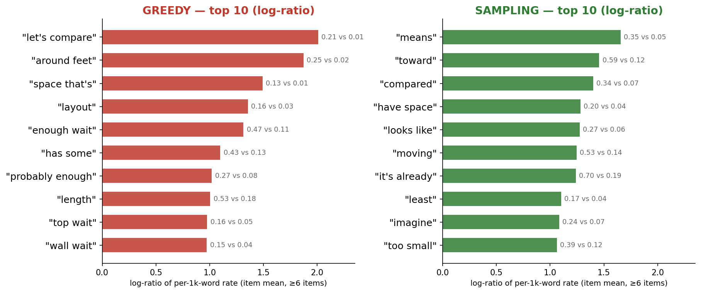
Greedy — “let’s compare”, “probably enough… wait”, “around feet”, “rough” → optimistic assertion, then second-guessing.
Sampling — “compared”, “looks like”, “it’s already”, “imagine”, “too small” → visualizes the scene and checks occupancy.
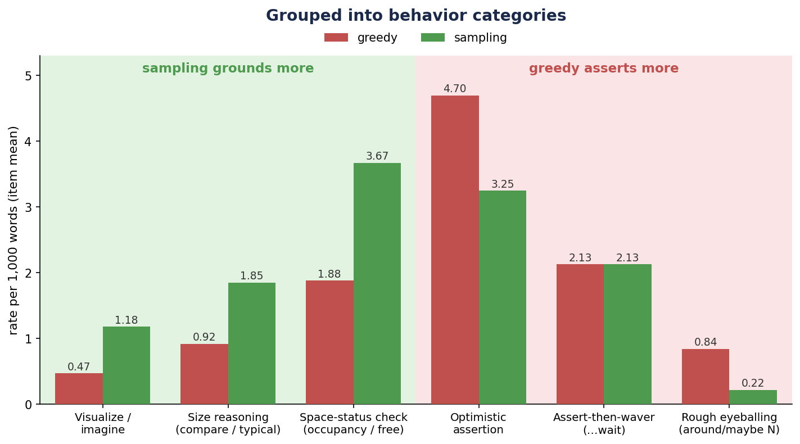
Grouping reasoning traces into behaviors: sampling does more visualizing & imagine (×2.5), size reasoning (×2.0) and space-status checking (×2.0); greedy does more optimistic assertion and rough eyeballing (×3.8).
The “…wait” waver is identical (2.13 = 2.13) — that spiral is decoding-independent. Sampling’s edge is the grounding, not less hesitation.
| Category | Side | Meaning | Examples (top-30 terms) |
|---|---|---|---|
| Visualize / imagine | S | Mentally simulating the scene | “looks like”, “imagine”, “physically” |
| Size reasoning (compare / typical) | S | Comparing sizes, recalling typical sizes | “compared”, “typical”, “say, 18 inches”, “too small” |
| Space-status check (occupancy / free) | S | Is the spot taken — or actually free? | “it’s already there”, “taking that space”, “have space” |
| Optimistic assertion | G | Asserting there is room without checking | “probably enough”, “has some”, “big enough” |
| Assert-then-waver (…wait) | G | Asserting, then immediately backtracking | “…enough— wait”, “…wall— wait” |
| Rough eyeballing | G | Loose numeric guesses / vague layout talk | “around 3-4 feet”, “maybe 2 feet”, “layout” |
S = sampling · G = greedy — categories built only from the top-30 distinctive terms.
Sampling isn’t “better reasoning” — it re-decides 18 / 105 of greedy’s answers, and the reshuffle lands on the minority “No” class: balanced 66 → 74.
Crucially, zero new wrong “Yes” — a shift of the decision balance, not raw capability.
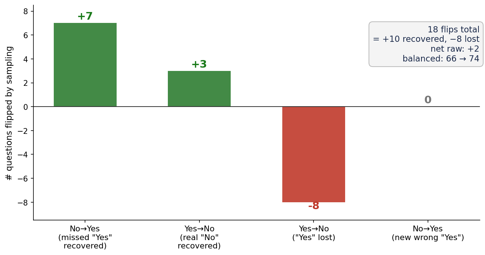
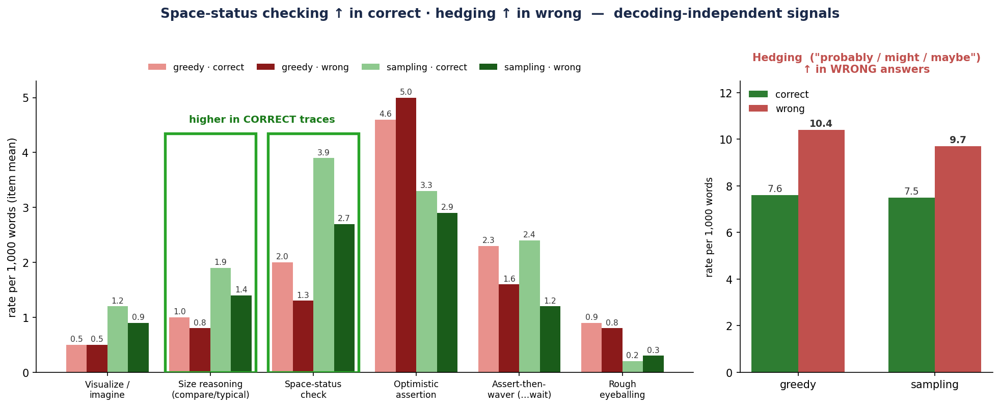
Correct traces check the space — space-status checking and size reasoning run higher in correct answers, for both decodings (green boxes).
Wrong traces hedge — “probably / might / maybe” rises in wrong answers (10.4 vs 7.6 greedy; 9.7 vs 7.5 sampling).
Decoding-independent — a free confidence signal from the trace alone (correlational, small n).
Final result — the two fixes stack to 74.1 balanced (79.0 official)
The 83%-Yes split makes raw gameable — blind-Yes tops raw (82.9) yet scores chance on balanced (50). We optimize and report balanced accuracy.
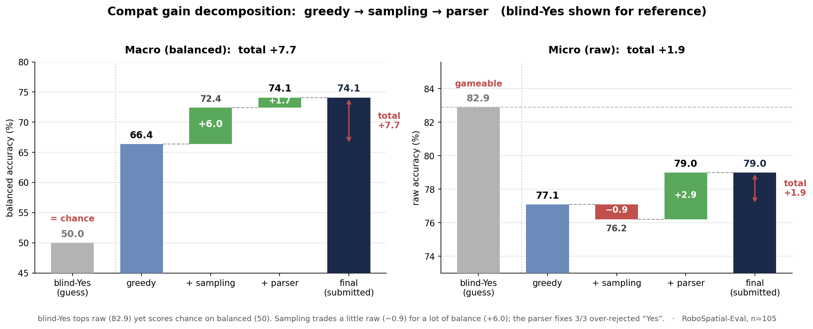
66.4 greedy → +6.0 sampling → +1.7 parser → 74.1.
+7.7 pt total (66.4 → 74.1, balanced).
Sampling recovers the missing “No”; the parser fixes 3/3 over-rejected “Yes”.
Micro (raw) lands at 79.0 (submitted).
Task 3
Point at a described region (≤2 points) — correct if a point lands inside the GT mask.
Base models RoboBrain2.5-8B-MT · pointing ⊕ Qwen3-VL-32B-Thinking · reasoner
Any single model caps out — best solo RoboBrain 64.8, Qwen 59.0 — and the two fail on different questions. Members are picked from each model × decoding × frame.
Union two complementary models (≤2 points): RoboBrain greedy·no-frame ⊕ Qwen sampling·object. At least one lands inside far more often.
Two failure styles — RoboBrain far-misses (wrong region), Qwen near-misses (right region). Reasoning helps discrimination, not localization.
Every candidate we considered — model × decoding × frame (single-model, public test)
Each cell = micro / macro (macro over the 6 relations). No single setting clears ~65 — and each model wants the opposite recipe.
| Model · decoding | no-frame | ego | object | world |
|---|---|---|---|---|
| RoboBrain · greedy | 64.8 / 62.8 | 62.3 / 59.7 | 61.5 / 57.0 | 63.9 / 61.2 |
| RoboBrain · sampling | 51.6 / 46.1 | 52.5 / 48.1 | 41.0 / 34.2 | 41.8 / 34.7 |
| Qwen · greedy | 52.5 / 45.0 | 57.4 / 50.5 | 59.8 / 52.0 | 52.5 / 49.1 |
| Qwen · sampling | 47.5 / 42.8 | 62.3 / 53.2 | 59.0 / 52.7 | 54.9 / 47.5 |
green = the two submitted members (RoboBrain greedy · no-frame, Qwen sampling · object). Best single caps at 64.8 — well below the union.
Single-model ceiling — no setting clears ~65; general VLMs (Molmo / LLaVA / Qwen2-VL) can’t point at all (~0).
Opposite recipes — RoboBrain wants greedy · no-frame; Qwen wants a frame + sampling. Reasoning helps Qwen but hurts RoboBrain (−4.9).
Errors don’t overlap — the two miss different questions → the opening for a union.
Two models that fail differently → their union covers more.
Each emits ≤2 points; correct if either lands inside — and they succeed on different questions
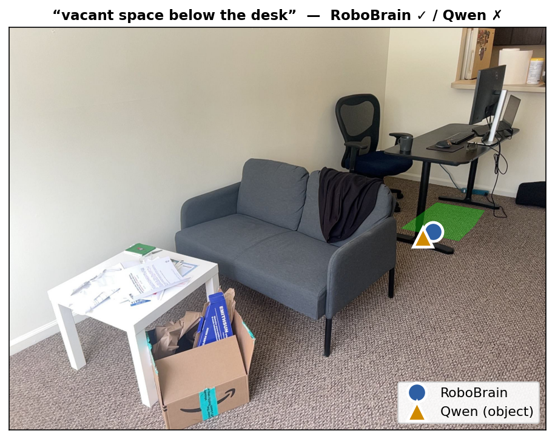
“below the desk” — RoboBrain lands inside; Qwen misses.
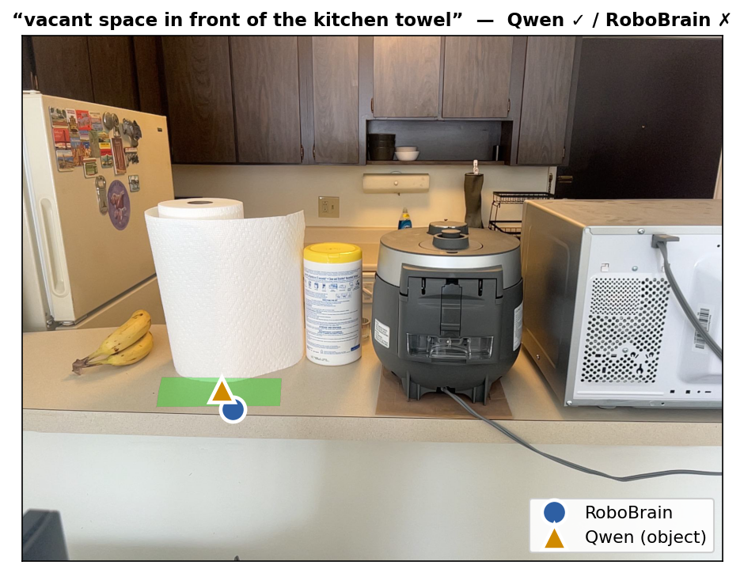
“in front” — Qwen lands inside; RoboBrain misses.
Because their mistakes are uncorrelated, taking both models’ points (≤2 total) means one is usually inside — the union clears the best single model (64.8 → 77.9), see the final result below.
Members are picked by their own accuracy — and reasoning is asymmetric
| Union (RoboBrain ⊕ Qwen, ≤2 pts) | Micro | Macro | rank |
|---|---|---|---|
| ✓ RB greedy·none ⊕ Qwen sampling·object | 77.9 | 73.7 | submitted · #1 |
| RB greedy·world ⊕ Qwen sampling·object | 77.0 | 73.4 | #2 |
| RB greedy·none ⊕ Qwen sampling·ego | 76.2 | 72.0 | #3 |
| RB greedy·world ⊕ Qwen sampling·ego | 76.2 | 71.4 | #4 |
Pre-select each member by its own single-model score — RoboBrain greedy {none, world}, Qwen sampling {ego, object} — then union. Our combo is #1 on both micro and macro. (public dev set; the submitted combo scores 78.7 / 72.3 on the official test)
Decoding × frame, per model — each wants the opposite:
RoboBrain — greedy ≫ sampling (~16 pt); no-frame is best.
Qwen — needs a frame (up to +15 pt); with a frame, sampling ≥ greedy → object.
Reasoning is asymmetric — keep it ON for Qwen, OFF for RoboBrain
Ablation on the submitted union: swapping either model’s reasoning setting lowers the union.
| Context union (≤2 pts) | Micro | Macro | Δ |
|---|---|---|---|
| ✓ RoboBrain (direct) ⊕ Qwen (Thinking) | 77.9 | 73.7 | submitted · best |
| swap Qwen → Instruct (reasoning OFF) | 75.4 | 71.5 | −2.5 |
| swap RoboBrain → CoT (reasoning ON) | 73.0 | 66.7 | −4.9 |
Helps Qwen as a union partner — its different mistakes complement RoboBrain better (and its traces are inspectable).
Hurts RoboBrain — reasoning derails its pointing (−4.9; CoT distillation −20). → submit Qwen WITH ⊕ RoboBrain WITHOUT, union-optimal.
Why the union works — two different failure styles
Each point’s signed distance to the target mask, normalized by object size (<0 = inside).
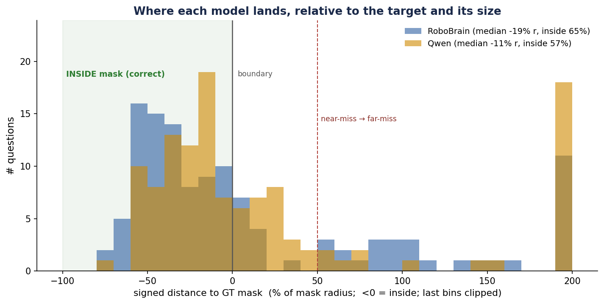
RoboBrain misses far — median miss ≈ 0.9 r, a cluster beyond 1.5 r → wrong region.
Qwen misses near — median miss ≈ 0.4 r → right region, just outside.
Different error geometry is exactly what makes them complement.
How we measure “far” vs “near” — signed distance to the mask
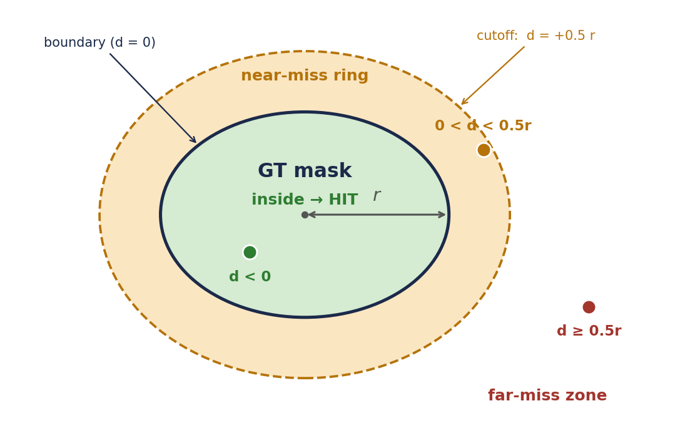
d = distance from point to mask boundary mask radius r
negative inside the mask · positive outside
r = √(mask area / π) — equal-area circle, a size proxy for any shape
HIT · d < 0
near-miss · 0 ≤ d < 0.5 r
far-miss · d ≥ 0.5 r
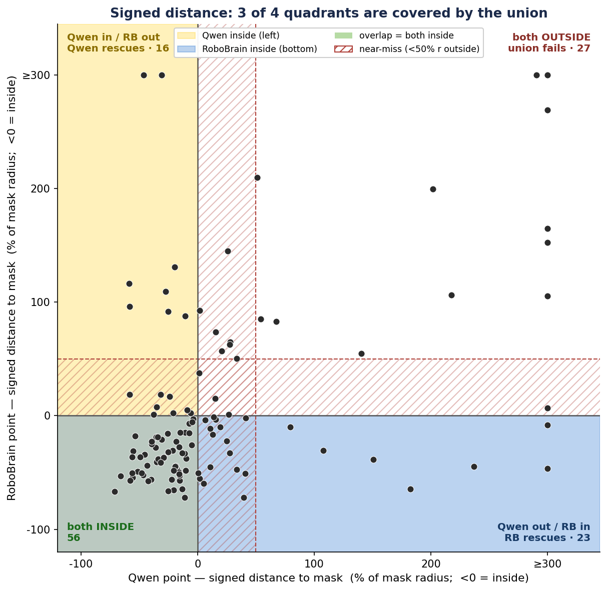
Each dot is one question (x = Qwen, y = RoboBrain signed distance). 3 of 4 quadrants are covered by at least one model inside → 95 / 122 ≈ 78%.
The two rarely miss the same question, so the union reaches ~78% vs RoboBrain 65% / Qwen 57% alone.
Reading Qwen’s <think> traces, grouped by how far the point landed (log-ratio of over-used terms).
Same question type, two reasoning styles
HIT · “vacant space below the table” — frame-invariant, commits to a concrete location
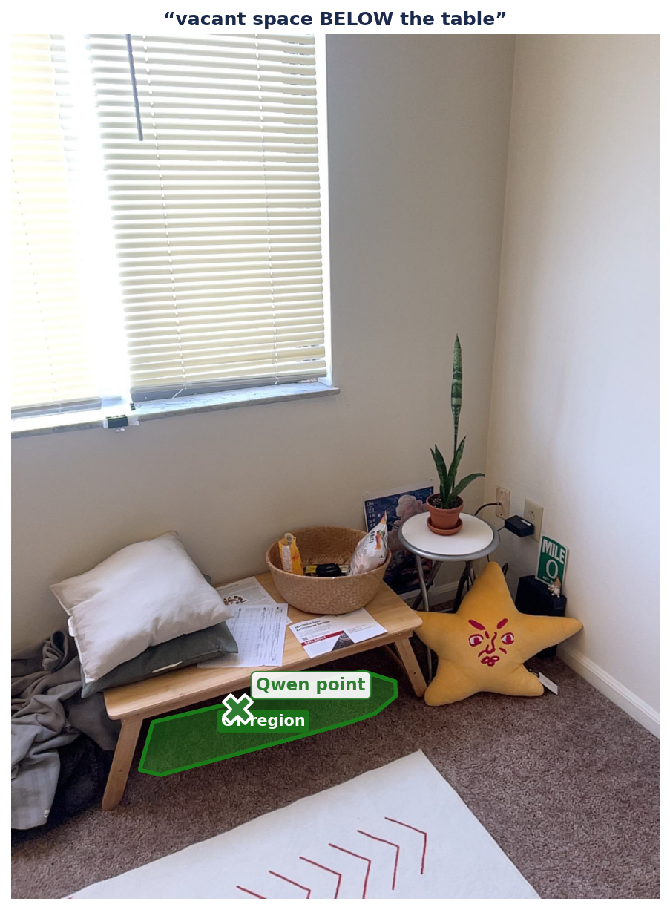
“…the space below = the area under the table’s surface, on the carpet… around the middle of the table’s base. → center area under the table.”
FAR-MISS · “vacant space in front of the mouse” — frame-dependent, never commits which way is “front”
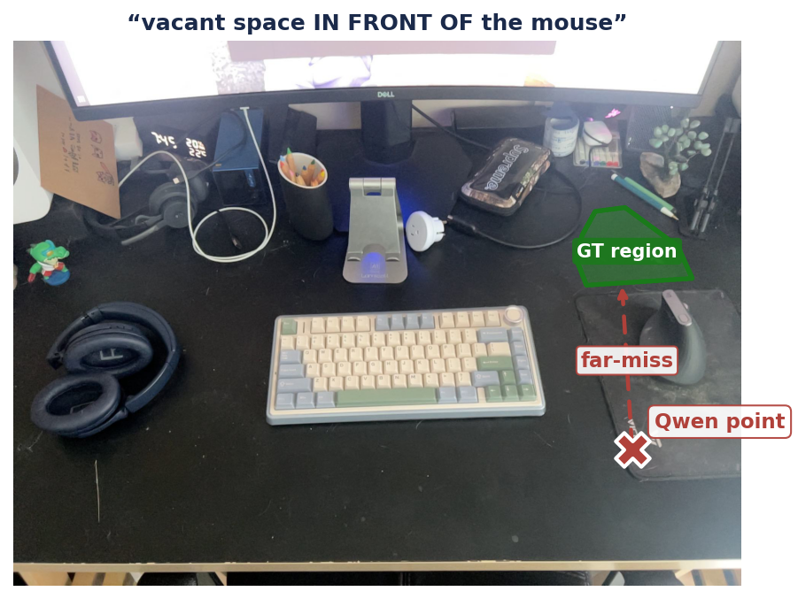
“From the mouse’s perspective, in front is towards the bottom… Wait — its natural front-facing direction… Wait, no. Wait, maybe towards the keyboard… Let’s think again. If you are the mouse, which way is your front?” → re-decides “front” ~10 times, never commits.
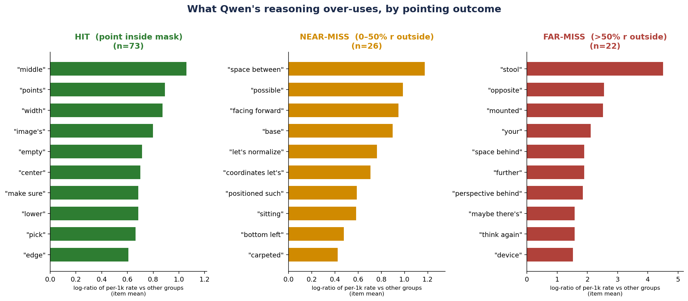
Hits & near-misses do concrete geometry — “middle”, “center”, “space between”, “normalize”.
Far-misses get tangled in perspective (“behind”, “opposite”, “your”) and second-guess (“think again”, “maybe there’s”).
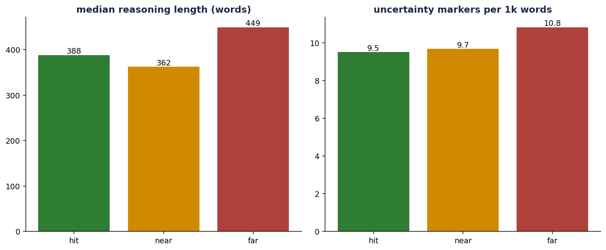
The failure isn’t too little thinking — it’s longer, more uncertain thinking that never resolves the frame. Median length hit 388 → near 362 → far 449 words; hedging 9.5 → 9.7 → 10.8 / 1k.
→ Reasoning helps discrimination (yes/no), not localization (placing the point) — it keeps re-deriving “behind” instead of committing.
Final result — the union clears every single model (→ 78.7 official)
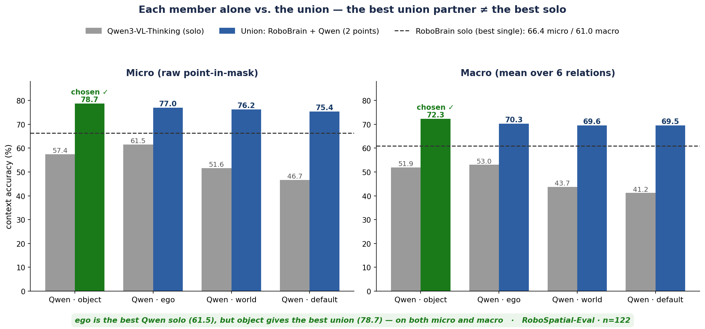
Best single model 64.8 → union RoboBrain greedy·no-frame ⊕ Qwen sampling·object = 77.9 (public) · 78.7 official.
Complementary errors — not a bigger model — are the lever. #1 among candidate unions on both raw and balanced.
Team
@misc{baek2026robospatial,
title = {Eliciting Spatial Skills from Open-Weight VLMs: A Zero-Shot, Per-Task Recipe for RoboSpatial-Home},
author = {Baek, Eunsu},
year = {2026},
note = {2nd place, RoboSpatial-Home Challenge · ERA Workshop @ CVPR 2026}
}